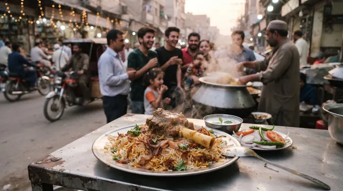
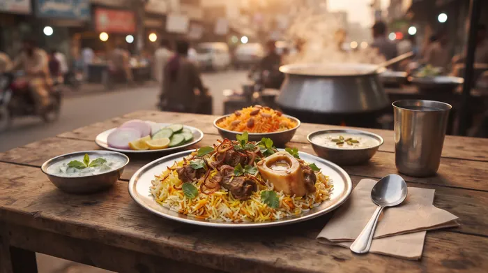
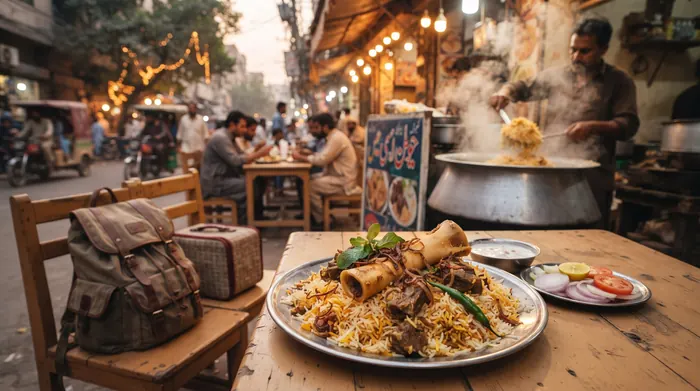

City choice
The one choice for biryani lovers across the city: Ghousia Beef Biryani
Why is Liaquatabad's Ghausia Beef Biryani the favorite of Karachi's biryani lovers? Easy guide to ingredients, rice, menu, prices, timings and delivery.
October 26, 2026 · 4 min read
Read more ←
Authentic Biryani Guide
Karachi Food Guide: Top Spots for Authentic Pakistani Beef Biryani
A practical Karachi food guide to finding authentic Pakistani beef biryani: how it should be cooked, what the plate should look like, and where Ghousia fits in Liaquatabad.
Oct 23, 2026 · 4 min read
Read more ←
Taste of Karachi
If you didn't eat Ghausiya Nali Biryani when you came to Karachi, what did you eat?
What to eat on a trip to Karachi? Reasons, timings, delivery, location and easy tips for first-time visitors to Liaquatabad's Ghausia Nali Biryani.